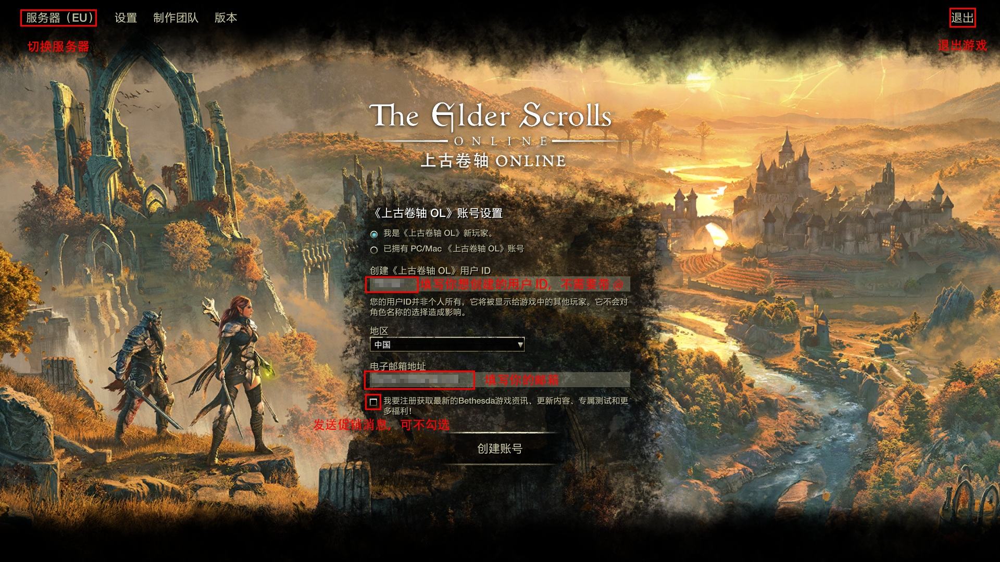

ESO新手指南
1.写在前面
玩了这么久ESO，也算是有了一些自己的心得体会。早在U42期间，糯竹就曾写下一篇《一个老萌新的ESO入坑教程》，但碍于当时才疏学浅，对游戏的理解略显肤浅，教程中存在一些表达不严谨的地方，甚至是明显的纰漏，很容易对新人产生误导，导致效果不尽如人意。因此，糯竹决定重新写一篇兼具严谨性与可读性的新手指南，以更好地帮助新人入坑，也就有了这一篇新手指南。
不得不说，ESO这个游戏的引导是非常糟糕的，很多新人朋友在游玩的过程中经常会感到很迷茫，不知道自己应该做什么；或者是遇到了各种问题，不知道该如何解决。本指南旨在为新人朋友们介绍游戏玩法，提供游戏技巧，拓宽游戏思路，降低大家走弯路、踩坑的概率，帮助大家都能找到适合自己的游戏玩法。
游戏机制千头万绪，欲理还乱，尽管糯竹殚精竭虑，但整篇指南仍然结构混乱，其中的疏漏与错误更是恒河沙数，俯拾皆是。此中种种不足，还望读者海涵。
1.1 说明
本指南基于U45补丁（版本10.3.5）编写，其中的数据来源，如无特殊说明，均为糯竹个人测试总结。随着新版本发布，部分资讯可能与游戏提供的内容不一致，请以实际游戏版本为准。
糯竹仅对PVE内容较为熟悉，本指南将以PVE视角切入，也主要以PVE为主。如需了解更多其他内容（如PVP），请向专业人士咨询。
1.2 如何使用本指南？
你需要拥有：
①良好的视力与理解能力
②一定的计算机网络基础
③必要的信息检索能力
下面是文本处理方式：
重要内容会加粗显示
斜体表示引用的言论，如：人用三年的时间学会说话，却要用一辈子的学会闭嘴，想想真是悲哀。——Rainmu
“*”表示一些拓展内容，或是糯竹个人主观感受。如果你只是轻度游玩，可以不必理会
“[]”中的内容是支撑正文观点的资料
请善用搜索功能（Ctrl+F）来获取你想了解的内容！
此外，糯竹还会给一些游戏中的内容添加说明，只需要点击就能看到其效果（尚在建设中）。
1.3 劝退
也许你已经摩拳擦掌，准备购买游戏大干一场，不过且慢！请你先好好考虑一下，你要入ESO这个坑吗？
不知道你是如何听说ESO的，又是抱着怎样的期待准备入坑的。不过我需要提前给你打一个预防针：“期待是痛苦的根源”。也许，ESO并不像其他人鼓吹的那么美好，相反，我安利过好几个朋友入坑，但他们最后都没有坚持下来；我带过的新人也挺多的，但好友列表里总是只有那么几个熟悉的名字还活跃着……
也许你入坑之后会觉得ESO实在与你调性不和，这自然是无法解决的；但是如果你是因为游戏中有种种问题无法解决，或是觉得“游戏里简直无事可做”而退坑，那我肯定会感到非常惋惜。这也是我写新手指南的初衷：帮助新手解决问题，介绍游戏玩法，希望大家都能在ESO中找到乐趣。
有这些阻碍是客观存在的：①价格过高，一年的会员费用加上加速器钱不算低；②服务器在国外，延迟较高，网络环境不好，掉线时有发生； ③官方一系列离谱操作； ④汉化质量不高。但我更希望，你也可以在ESO中找到自己想要的、属于自己的快乐。也许是一段真挚的友情，也许是一次次突破自我的喜悦，亦或是单纯的去发现，去探索……
老实说，我并不觉得现在是个适合新人入坑的时候。自从黑木和高岛章节的巅峰之后，ZOS骚操作不断，游戏日活也是一路下滑，游戏的顽疾不改的同时，各种问题也愈演愈烈。不过，如果你仍然想入坑，我还是会笑着迎接你：“欢迎来到泰姆瑞尔，无魂者。”
2.游戏入坑
2.1 游戏基础信息
《上古卷轴OL》(Elder Scrolls Online)发布于2014年4月4日，由Zenimax Online Studio开发(简称为ZOS)， Bethesda发行，是一款基于《上古卷轴》系列（The Elder Scrolls Series）世界观（圈内用Lore指代）的MMORPG。
由于“上古卷轴”被称为“老滚”（老头滚动条），所以开玩笑的时候会将其称为“老头在线滚动”。而官方和一般交流会称其缩写ESO。
ESO是跨平台的，在PC、Mac、Play Station和Xbox平台均有提供。
2.2 配置需求
以下是来自Steam的针对PC配置需要的有关信息：
最低配置：
| 需要64位处理器和操作系统 | |
|---|---|
| 操作系统 | Windows 10 64-bit |
| 处理器 | Intel® Core™ i5 2300 or AMD FX4350 |
| 内存 | 4 GB RAM |
| 显卡 | Direct X 11.0 compliant video card with 1GB RAM (NVIDIA® GeForce® 560 or AMD Radeon™ 6870) |
| DirectX 版本 | 11 |
| 网络 | 宽带互联网连接 |
| 存储空间 | 需要 150 GB 可用空间 |
| 声卡 | DirectX compatible sound card |
推荐配置：
| 需要64位处理器和操作系统 | |
|---|---|
| 操作系统 | Windows 10 64-bit |
| 处理器 | Intel® Core™ i5 2300 or AMD FX4350 |
| 内存 | 8 GB RAM |
| 显卡 | Direct X 11.0 compliant video card with 4GB of RAM (NVIDIA® GeForce® GTX 970 or AMD Radeon™ RX 570) or higher |
| DirectX 版本 | 11 |
| 网络 | 宽带互联网连接 |
| 存储空间 | 需要 150 GB 可用空间 |
| 声卡 | DirectX compatible sound card |
这里给出官方配置检查器：下载，可以用作参考。
*这其实是很早的配置要求了，现在ESO的配置要求会比Steam上显示的配置更高。糯竹个人经验，ESO与《上古卷轴：天际特别版》的配置要求差不多，如果你的电脑可以带得动《上古卷轴：天际特别版》，那么运行ESO应该不会有太大的问题。
2.3 游戏购买
这里给出官网购买链接：ESO官网.
这里放一个Steam版的传送门：Steam.一般推荐PC玩家通过Steam购买，具体原因会在后面解释。
我应该购买哪个版本？
以在Steam上购买为例，主要有3个购买选项：
《上古卷轴OL：标准版》:包含了本体游戏和免费的晨风DLC。
The Elder Scrolls Online Upgrade: Gold Road:仅包含黄金大道DLC，需要本体游戏才能游玩。
The Elder Scrolls Online Collection: Gold Road:此版本包含了本体游戏以及所有发布的大型DLC。
如果你只是想轻度体验ESO，一个标准版足矣；但如果你想长期游玩，强烈推荐购买 The Elder Scrolls Online Collection: Gold Road 合集包（也被称为“大包”）。而 The Elder Scrolls Online Upgrade: Gold Road 仅包含黄金大道而不包含以前发布的大型DLC，只适合已经购买了死灵之地大包的玩家购买。
ESO的新职业是包含在DLC中的，例如北艾斯维尔DLC包含了死灵法师职业，死灵之地DLC包含了奥术师职业，所以如果你没有购买大包，就无法使用新职业（即使你有会员也一样），但可以在游戏内通过王冠购买新职业（不推荐）。
*本指南将在Steam中购买的大型章节称为“DLC”，在游戏里使用王冠购买的小型章节和地下城章节统称为“章节”。
*ZOS目前已经宣布，在未来将采用“赛季制”更新，具体情况尚不清楚，但可能会对目前的购买方式产生影响。
2.4 王冠与会员权益
王冠是游戏内购货币，用于在王冠商店购物。
你可以在Steam中购买王冠。直购王冠价格颇高，使得玩家怨声载道。好在，王冠并不是一直这么贵，每年王冠都会打折出售，可以趁打折的时候囤一些。
除了直接购买王冠，ESO Plus 会员的权益也能让你获得低价王冠。
也许你觉得Steam直充王冠太贵，想试试某宝上的低价王冠（或者类似平台上的低价金币、低价会员等），但请注意，这些东西来源不明，可能导致封号风险，请谨慎考虑！不建议通过任何非官方途径购买王冠等货币！
如果你想长期游玩ESO，会员是必不可少的。它包含以下权益：
·免费使用除最新章节外的DLC（不含DLC职业和帝国人种族）；
·每月赠送1650王冠（开通后一次性到账）；
·商店部分商品优惠；
·制作包裹无限储存制作材料（重要！）；
·双倍银行空间；
·获得经验、金币、制作灵感、联盟点数（AP）和档案塔财富的速度增加10%；
·特质研究时间缩短10%；
·住宅可放置的装饰品和收藏品数量翻倍；
·双倍蜕变水晶上限（即上限从500蜕变水晶提升到1000蜕变水晶）；
·允许为时装染色。
注意：会员和在Steam中购买的DLC是可以跨服务器使用的，但王冠和王冠购买的物品无法跨服务器使用！举个例子，你有5000王冠，在PC欧服使用1500王冠购买了1个角色槽，余额3500王冠；但当你来到PC美服时，你的王冠余额也是3500王冠，而且你也不会收到这个角色槽。这也是糯竹更推荐买大包解锁新职业的原因，因为可以跨服务器使用。
此外，ESO Plus应在创立角色后再开通，否则赠送的王冠可能不到账，需要找客服补发。
Epic平台会员需要在官网购买，价格15美元/月，比Steam平台高，因此建议PC玩家在Steam平台游玩。
2.5 创建账号
由于在官网创建账号需要通过人机验证，国内网络环境很容易导致加载失败，无法创建，建议在游戏内创建，无需人机验证步骤。
如图，你需要输入电子邮箱和你想创建的ESO ID。ESO ID是唯一且跨服务器的，你可以通过ID识别其他玩家。不建议使用手机号或QQ号作为你的ID！
*一般来说，ID以@开头，但在公会历史记录中，@不会显示。
创建账号后，请查看邮箱，并根据指引在三天内完成账号验证。
登录时有时需要八位访问验证码。如果你的邮箱无法收到访问验证码，请检查是否通过Steam启动游戏（安装后的游戏貌似不是通过Steam启动的，需要关闭后手动从Steam中打开）。
{kind=link}

2.6 加速器选择
ESO的服务器都不在国内，例如PC欧服的服务器在德国法兰克福。由于物理距离限制，不挂加速器很难获得良好的游戏体验：不仅延迟更高，而且更容易遇到卡顿掉线等情况。因此，还是推荐使用加速器。
主流的加速器都能加速ESO，但地区、运营商、所选节点等差异都可能影响加速效果。你可以咨询其他玩家以帮助你做出选择。
2.7 服务器选择
ESO各平台都分了两个服务器，以PC平台为例，有PC欧服（EU）和PC美服（NA）两个服务器。
PC欧服总人数更多，但由于跨的时区多，玩家在线时间较为分散。欧服主要使用英语，但也可以见到俄语、法语、德语、西班牙语等语种。欧服的物价相对较低，而由于服务器离国内更近，延迟也会稍低（越往西北延迟越低）。欧服的国人较少，但也有好几个大型公会，不用担心找不到组织。
PC美服总人数少，但由于玩家群体以美国人为主，玩家在线时间更集中，也基本上都说英语。由于服务器在美国，横跨太平洋，延迟会略高。美服的国人较多，看起来更热闹一些。
以上内容仅供参考，不构成选择建议。
3.ESO初试
3.1 创建角色
3.1.1 PVE基础知识补充
对于PVE而言，职业与你的角色位置*不挂钩。PVE中有3种位置：输出、坦克和奶妈。
*这里的角色玩法英文为Role，指的是你在队伍中的位置或者职责，但ZOS蛋疼地直译为与创建的角色（Character）相同的“角色”，没有做出区分。本文中“Role”这个词会用用糯竹自己翻译的“位置”代替。
输出（Damage Dealer）：对怪物全力输出。
坦克（Tank）：嘲讽怪物，提供增减益，营造良好的输出环境。
奶妈（Healer）：治疗队友，提供增减益，便利队友输出。
在后面会有更详细的解析。
3.1.2 创建角色
创建角色有这几个步骤：
①取名。
这里的名字是该角色的名字，只支持英语不支持中文，限制很多，取名界面有详细要求。
②选种族和联盟。
一共有十个种族，其中只有帝国人需要氪金，可自选联盟。其他种族绑定联盟。
联盟由种族决定，对PVP阵营有影响，但对PVE没有。如果你不玩PVP，联盟对你没有影响。
一共有三个联盟：
黑檀心公约联盟 (EP)：标识为红龙，包含诺德人、暗精灵和亚龙人(准确的说法是阿尔贡人)。
匕落同盟 (DC)：标识为蓝狮子，包含布莱顿人、红卫人和兽人。
先祖神洲 (AD)：标识为黄凤凰，包含高精灵、木精灵和虎人(准确的说法是卡吉特人)。
你可以在商店购买“任意种族，任意联盟”包任意选择联盟（被称为“叛国包”）
种族被动对你的强弱有一定的影响，但非常有限，如果你并不是极端追求数值的玩家，建议按照自己的XP选。
对于PVE，这样选择可能更优：
| 法系输出 | 高精灵 |
| 耐系输出 | 兽人 |
| 可法可耐 | 暗精灵、虎人（暗精灵比较万金油） |
| 坦克 | 诺德人、帝国人、亚龙人 |
| 奶妈 | 亚龙人、布莱顿人、高精灵 |
其中，红卫人和木精灵的被动相对劣势；但实际上，种族被动带来的差异并不大，一般不超过5%，你完全可以选择自己喜欢的种族。
③选择职业。
选择什么职业可以说是最困扰新人的一个问题了。但实际上，这并不是一个大问题：你可以创建多个角色，每个角色都可以选不同的种族与职业，通过这种方式可以体验全部职业的内容。
对于PVE而言，职业与你的角色位置不挂钩。任何职业都能适应这三个位置，但不同职业之间的适应情况有所不同。下面是各职业分析与位置推荐。
| 龙骑士 | 输出方面，龙骑士有良好的AOE能力，输出循环简单，上手难度较低；坦克生存能力强，对团队增益也十分优秀，但不适合当奶妈。 |
| 圣殿骑士 | 输出方面，拥有全游戏最强斩杀技能，单体伤害优秀的同时也有较强的AOE能力，上手难度较低；但由于能给团队提供的增益有限，坦克奶妈方面不太理想。 |
| 术士 | 输出方面，术士可以使用橡木之环玩重击法，上手难度低；坦克奶妈增益良好，也均较理想。 |
| 夜刃 | 输出方面，夜刃单体能力较强，但AOE能力稍逊，上手难度略高；奶妈方面，夜刃大招流转快且增益优秀，较为理想，坦克方面也有一定可取之处。 |
| 守望者 | 输出方面，守望者循环略微复杂，上手难度略高；奶妈上手简单，且拥有其他职业无法提供的次级坚毅增益，增益优秀；而坦克方面，守望者回血多，但绝对生存能力与龙骑术士有差距，且团队增益有限，故出场率低。 |
| 死灵法师 | 输出方面，死灵法师循环上手较难，但上限较高；坦克增益优秀，奶妈无明显弱势的同时也缺乏明显的强项，出场率不高。 |
| 奥术师 | 输出方面，奥术师循环简单，上手难度低，且拥有不俗的直线AOE能力；坦克资源良好，生存能力强；奶妈较为简单，同时又能提供良好的增益。 |
以上评价由糯竹根据自身游戏体验得出，仅供参考。
请注意，该评价不代表职业的实际强弱，个人对游戏的理解和操作起主导作用，你不需要按照“谁最强”的思路选择，而应该按照自己的喜好选择。
*搞不好下个版本调整职业平衡，就三十年河东三十年河西了，你说对吧ZOS。
④捏脸
捏脸是老滚系列的传统艺能了，但需要注意的是，捏脸界面在冷港的哀嚎监狱，光线与大世界的不一样，脸部效果会有区别。
3.2 调整游戏设置
只有当你创建角色进入游戏后，才会显示所有游戏设置。推荐你更改以下选项，以获得更好的游戏体验。
设置-视频-显示：显示模式->窗口化（铺满全屏）：该选项可以防止输入中文时留下无法清除的候选词框。
设置-音频-字幕：NPC字幕->开：这一项默认是关闭的，开启后可以让你清楚NPC讲了些啥。
设置-游戏设置-战斗：避免攻击无辜者->开：防止你一不小心打到NPC导致被通缉。
设置-游戏设置-战斗：快速施放地面技能->开：可以更快捷方便地施放地面技能。
设置-游戏设置-手柄：手柄模式->自动：默认为关，如不更改则无法使用手柄游玩。
设置-界面-性能：帧率/延迟->开：建议开启以查看实时帧率与延迟，可用于辅助判断当前游戏状况。
设置-社交-聊天设置：脏话过滤器->关：建议关闭，否则聊天里全是***。
设置-社交-通知：排行榜通知->关：建议关闭，否则会发送各种各样的通知，影响沉浸感。
此外，还有一些可选的设置，例如敌人AOE效果颜色、是否要双击闪避、增益与属性条效果，可根据个人喜好调整。
*对于渣机，强烈推荐开启FSR模式。关于什么是FSR，请参阅AMD官网。
3.3 新手教程
你来到了冷港的哀嚎监狱，这是魔神（正确翻译是“迪德拉王子”）莫拉格·巴尔的领域，你需要逃出这个位面。
你需要根据游戏指引完成新手教程。新手教程中包含了游戏的基础操作，包括移动、使用武器攻击（轻攻击和重攻击）、格挡、打断、翻滚闪避、潜行、使用技能等操作。我们这里详细讲解一些重点内容：
使用武器攻击可以触发武器附魔，同时提供终极点回复。
格挡能显著降低受到的伤害，但需要消耗耐力（有一些装备或被动可以改为消耗魔力进行格挡）。
打断是终止敌人的施法。被打断的非经验怪会眩晕且失衡。
翻滚闪避可以允许你躲开致命伤害，并且带来较长的无敌帧。
3.4 接下来该干什么？
是的，从现在开始，你就是泰姆瑞尔大陆的新成员了。也许你会困惑，下一步干什么比较好？这里列出了一些主要的游玩思路供你参考。
·组队PVE：既包括了四人副本，也包括了十二人的试炼，通过团队合作达成一系列高难度成就。PVE中最高难度成就被称为“三合一”，即在限定时间内完成副本老兵困难模式，且无队伍成员死亡。
·PVP：既有目标达成型小队作战的小战场（Battleground），又有大型攻城战西罗帝尔，还有PVE与PVP结合的帝都，也有1V1的决斗（俗称“插旗”），你可以尝试不同的角色构建（Build），体验不同的玩法。
·做任务：在泰姆瑞尔大陆游历，体验不同的剧情。尽管很多任务都没什么记忆点，但好在量大管饱，可以假装这就是滚六。
·打牌：我们ESO也有自己的昆特牌（不是）！在高岛号旗湾完成“望族传奇”新手教程后，你就可以开始打牌了！你可以尝试不同的卡组组合，和对手斗智斗勇，甚至是单纯凭运气获胜（需要会员或高岛DLC）！
·钓鱼：在各处钓鱼，体验垂钓的乐趣。
·装修：想创造属于自己的家园吗？你可以装修自己的房子，赋予它们截然不同的风格！你也可以打开“队伍和活动查找器”，选择“住宅巡览”，访问其他玩家的住宅，震撼于装修大佬们的脑洞。
这些玩法直接并不是对立的，你可以同时体验所有玩法。
对于新人，如果你不确定自己喜欢什么样的玩法，可以先跑世界做任务，同时每天可以使用队伍与活动查找器完成普通随机地下城和战场，等到满级后再做进一步的考虑。
4.游戏系统详解
4.1 等级系统
4.1.1 角色等级
角色等级从1级开始，最高50级。角色等级仅作用于当前角色。
获取经验可以升级，且越到后期升级所需的经验越多。将鼠标移到屏幕左上角的经验条上可以查看升级所需要的经验。
每次升级都会获得属性点、技能点和其他升级奖励，升级过程中一共会获得64属性点和技能点。
达到50级后，经验条上的角色等级会隐藏，取而代之的是勇士等级。当你首次达到50级时，你会获得10勇士点数，使你的等级达到勇士10级。
4.1.2 属性点
当你提升角色等级时，你也获得属性点。升级过程中一共会获得64属性点。
属性点用于提升你的生命上限、耐力上限与法力上限。
在PVE中，输出会将自己全部的属性点都加到法力或耐力的其中一个，前者被称为法系输出，后者被称为耐系输出。奶妈会将自己全部的属性点都加到法力中。对于新手坦克而言，可以三种属性点相对平均地分配（但确保生命上限最高，且不应低于35k，耐力上限略微高于法力上限）。
*这是因为最大资源上限将影响你的伤害，1000点资源上限大致等于97点武器与法术伤害（但该效果不计入伤害面板，也不受高级残暴、高级巫术等增益影响）。[1]
4.1.3 勇士等级
当你首次达到50级时，会解锁勇士点数。此后，你所有已达到50级的角色获得经验时，都可以提升你的勇士等级。
勇士点数从勇士10级开始，直到勇士3600级封顶。不像角色等级，勇士等级是在整个账号通用的。也就是说，即使你的角色尚未启用勇士等级，也可以分配勇士点数，享受勇士点数带来的增益。
每次提升勇士等级时，你都会获得一个勇士点数。勇士点数有三种类型：制作点、战争点和强健点，按照顺序轮番获得。你可以通过屏幕左上角经验条的颜色以了解下一次升级获得哪一种勇士点数。
4.1.4 勇士点数
你可以按=打开勇士点数页面，查看并分配勇士点数。
勇士点数按照星座分配，每个星座的勇士点数相互独立。使用勇士点数可以点出勇士技能：其中一种是被动勇士技能，点出后默认生效；另一种是主动勇士技能，需要将其置于屏幕顶部勇士栏才会生效。
强烈建议新人在勇士点数足够后立刻点出战争星座的准备就绪被动技能（位于避免死亡节点中）。
4.1.5 启迪
启迪经验是一种针对勇士等级的增益，可以帮助你更快速地提升勇士等级。
启迪经验生效期间，获取的所有经验将提升至原来的4倍。当你使用完所有启迪经验后，将按照正常速率获取经验。
举个例子，假设你现在有12000点启迪经验，当你本该获得1000点经验时，在启迪经验作用下，你将获得4000点经验，此时启迪经验还剩余8000点。此时，如果你本该获了3000点经验，根据启迪经验获取规则，启迪经验只能加速其中2000点经验的获取，之后就会消耗殆尽，因此你只会获得9000点经验。
*经验获取计算过程是不显示的，你获取的经验会直接显示。
每天会获得40万点启迪经验。如果启迪经验没有使用完，它会累积起来，最高累积480万点（12天）。
4.1.6 对于等级的正确做法
首先明确一点，新人不要刷级，通过黑玫瑰刷级等级提升过快，可能会被ZOS误以为是工作室小号，导致封号。
个人建议，等级不强求，无需刻意追求等级。
但一般认为有这么几个等级需要尽快达成：
10级：解锁地下城查找器、每日战场和西罗帝尔。
15级：解锁双技能栏。
45级：解锁无畏者每日。
50级：解锁勇士等级。
勇士160级：最高装等，这时候就可以考虑毕业套装了。
新人可以考虑的刷级手段：
阿里克尔沙漠跑暗锚：在区域频道发送“+dolmen”（PC欧服）或“x”“y”“z”（PC美服）（不过实际上都可以），会有人邀请你加入队伍，跟着人群跑就行了。
荒崖法术之疤：打怪升级，建议多带AOE技能提升效率。
荒崖天临墓穴：组队洞穴，难度较高，对新手较为困难，但在此刷级可以快速提升斗士公会等级。
需要注意的地方：
①物品的“训练”特质只增加怪物击杀经验，对于任务经验和发现地点经验无效。
②队伍中成员越多，每人获得的经验越少，单人和双人时获取经验最多。
4.2 物品系统
4.2.1 物品分类
在ESO中，物品可大致分为这些类型：
·装备：包括武器、护甲与珠宝。
·消耗品：可以直接使用的物品，使用之后数量减少，如药水、食物和修理包。
·材料：用于制作其他物品的原材料。
·伙伴物品：给伙伴的装备。
·装饰品：美学或实用性家具，用于装饰住宅。
·其他物品，如藏宝图、开锁器、灵魂石等，这里不再一一列举。
4.2.2 物品栏
按I可打开物品栏。
ESO中的物品栏是以格子（Inventory Slot）来计算的，而非历代老滚的以负重（CarryWeight）计算。例如，所有装备都需要占据一个格子，而诸如消耗品、材料之类的物品则可以堆叠，一般上限是100或200，取决于具体是哪一种物品。
你的物品栏初始拥有60个格子。你可以在各地背包商人处提升物品栏容量（可提升至140格），也可以通过在马厩训练骑术容量提升物品栏（最多60格），或者在王冠商店购买载物类非战斗宠物。购买任何载物类宠物，都会将你所有角色的物品栏容量增加5（无需设置为启用宠物）。
这是在背包商人处提升物品栏容量所需要的花费：
| 物品栏容量 | 当前花费 | 总计花费 |
| 70 | 400 | 400 |
| 80 | 2000 | 2400 |
| 90 | 5900 | 8300 |
| 100 | 11000 | 19300 |
| 110 | 19200 | 38500 |
| 120 | 30700 | 69200 |
| 130 | 46000 | 115200 |
| 140 | 64000 | 179700 |
4.2.3 银行
你可以在各地银行家处访问你的银行。与物品栏类似，银行可用于存放你的物品。银行是一个独立于角色的存储空间，你可以将物品放入银行来实现物品的账号内流通。
你的银行初始有60个格子。你可以在银行家处购买银行空间，提升银行容量，最高可达240格。会员生效期间，你的银行容量翻倍。
存放在银行中的材料可以直接在制作台使用。
这是在银行家处提升银行容量所需要的花费：
| 银行容量 | 当前花费 | 总计花费 |
| 70 | 1000 | 1000 |
| 80 | 3000 | 4000 |
| 90 | 6800 | 11100 |
| 100 | 11400 | 22500 |
| 110 | 20500 | 43000 |
| 120 | 28300 | 71300 |
| 130 | 32700 | 104000 |
| 140 | 37500 | 141500 |
| 150 | 42700 | 184200 |
| 160 | 45000 | 229200 |
| 170 | 50000 | 279200 |
| 180 | 55000 | 334200 |
| 190 | 60000 | 394200 |
| 200 | 65000 | 459200 |
| 210 | 70000 | 529200 |
| 220 | 75000 | 604200 |
| 230 | 80000 | 684200 |
| 240 | 85000 | 769200 |
4.2.4 获取更多储物空间的方法
①如4.2.2所述，购买王冠商店载物类非战斗宠物，可提升总计15格物品栏容量。
②获取储物箱并放置在住宅中，一共有8种储物箱，4个30格，4个60格，可使用任务令券、泰瓦尔石购买，也可在王冠商店使用王冠购买（不推荐）。
③在游戏免费体验周，创建9个Steam帐号免费游玩ESO，创建一个公会，把所有小号拉进来，即可解锁公会银行，可获得500格储物空间。
*此外可以在新手区发小广告，如果进来的萌新退坑了，就相当于给你的公会贡献了一个永久名额，不过糯竹并不推荐如此做，太不地道了。
④开会员获得材料背包，极大减轻物品栏压力。
4.2.5 物品绑定
绑定物品有两种类型：帐号绑定物品与角色绑定物品。
帐号绑定物品只能在你的账号内流动，无法与其他玩家交易，但你可以将其存入自己的银行或储物箱。如绝大多数副本套、试炼套、竞技场套，已绑定的地区套、制作套，调查报告，以及大多数王冠物品。
角色绑定物品只能被当前角色使用，不能转移给账号内的其他角色，更无法与其他玩家交易。角色绑定物品一般是升级过程中获得的各种物品，或是一些任务给予的特殊物品。
无绑定物品可以自由转移与交易，如绝大多数无词条装备，未绑定的地区套、制作套，各种消耗品，雕文，灵魂石，攻城器械等物品。
拾取时绑定与装备时绑定
拾取时绑定物品会在你拾取该物品时自动绑定。装备时绑定物品会在你装备后或是手动绑定后将与你的账号相绑定。
受缚物品
当你在组队时获得副本套、试炼套与竞技场武器时，它们在你拾取时就会与你的账号相绑定，但是在两个小时的时间内，你可以将其与你的队友进行面对面交易；两个小时后，它们将完全与你的账号相绑定，无法再交易给队友。
任何对受缚物品的修改都将导致它们与你的账号相绑定，如提升品质或蜕变特质。当你分解受缚物品时，它们会直接进入你的图鉴。如果将其卖给商人，在受缚状态结束后，它们也将进入你的图鉴。
值得注意的是，当你独自获取此类物品时，它们会直接与你的账号相绑定。
唯一物品
唯一物品的含义为在当前存储空间中只能有一个此物品。
例如藏宝图，你无法使两张一模一样的藏宝图放在物品栏中，如果你的物品栏中已有该藏宝图，那么你将无法从银行中取出一张一样的藏宝图。
4.2.6 货币
ESO中有多种货币，其中金币是ESO的流通货币。
一级货币：
王冠：通过充值购买，用于购买王冠商店中的各种商品。
王冠宝石：开启王冠宝箱后，分解无用物品获得，可用于购买当期王冠宝箱中的物品或其他物品。
二级货币：
金币：ESO的流通货币。
联盟点数：参与PVP活动，通过在西罗帝尔攻城、游玩战场、在帝都杀死其他玩家等方式获得。
泰瓦尔石：在帝都杀死怪物或玩家可获得。当你在帝都（不含帝都监狱、白金塔两个副本）死亡时，将掉落身上一半的泰瓦尔石。
任务令券：完成大师委托后获得，可在大师委托中介处购买物品。
这些货币为可以在不同角色间存储与转移。
档案塔财富：在无尽档案塔击败Boss、完成任务获得，用于在无尽档案塔消费。
帝国碎片：在帝都（含帝都监狱、白金塔两个副本）击败怪物时可获得，用于在帝都消费。
活动兑换券：在节日活动期间获得，用于在帝都行商、活动商人助手和夫诸商人处消费，最多储存12张，如果已满将无法获得更多活动兑换券，需要先使用后才能获得。
勉励印记：完成勉励任务后获得，可购买当期王冠宝箱中的物品。
蜕变水晶：完成随机地下城、在战场中获胜、打开贡献者奖励后、完成无畏者任务、完成竞技场、完成每周试炼任务、登上周榜、打牌都可以获得蜕变水晶，用于蜕变或重构装备。
无畏者钥匙：完成无畏者任务后可获得，用于在无畏者商人处购物。
这些货币账号通用，无需在角色间存储与转移。
4.3 制作系统
4.3.1 制作概览
制作是利用制作台，将原材料加工为实用物品的过程。
4.3.2 制作技能
一共有7种制作技能：锻造、木工、制衣、珠宝制作、附魔、炼金、烹饪。
每种制作技能满级均为50级，制作物品、分解物品、完成制作委托都可以获得灵感（制作经验），提升制作等级。
灵感增强勇士点可提升获得的灵感。
4.3.3 精炼原材料
精炼原材料可获得精炼后的材料、特质材料、样式材料与品质提升材料。拥有制作分解被动和绿CP细致拆解可提升精炼出品质提升材料的几率。
精炼原材料不会获得灵感。
这是精炼获得品质提升材料的概率。
| 材料品质 | 几率 | ||||
|---|---|---|---|---|---|
| 无分解被动 | 1级被动 | 2级被动 | 3级被动 | 3级被动+细致拆解 | |
| 优良 | 1.00% | 1.15% | 1.31% | 1.50% | 1.69% |
| 上乘 | 0% | 0.96% | 1.09% | 1.25% | 1.41% |
| 史诗 | 0% | 0% | 0.66% | 0.75% | 0.84% |
| 传奇 | 0% | 0% | 0% | 0.50% | 0.56% |
数据来源：UESP，仅供参考
4.3.4 制作物品
使用各种制作台可以制作物品。
对于锻造、木工和制衣，物品需满足四种搭配：物品类型、等级、样式与特质。
对于珠宝制作，物品需满足三种搭配：物品类型、等级与特质。
对于附魔，物品需满足三种搭配：效力、精华与相质。
其中，效力决定了雕文的等级，精华决定了雕文的词条，相质决定了雕文的品质，效力与精华共同决定了雕文的类型。
对于炼金，物品需满足两种搭配：溶剂与材料。
对于烹饪，制作食物或饮品需先学习配方。
4.3.5 分解
你可以分解一些物品以获得原材料、样式材料、品质提升材料和特质材料。其中，轻甲和中甲可在制衣台分解，重甲和近战武器可在锻造台分解，远程武器和盾牌可在木工台分解，珠宝可在珠宝制作台分解，雕文可在附魔台分解。
如果你的制作技能尚未满级，分解这些物品也将给予你灵感。
拥有拆解、木材提取、金属提取、符文石提炼、珠宝萃取等被动或细致拆装勇士点提升获得材料的概率。
4.3.6 提升物品品质
在对应制作台，你可以使用品质提升材料提升物品品质。
鞣酸专精、精通树脂技术、回火专长和镀层专长被动可减少品质提升材料的消耗。
注意：一定要确保你点满了对应被动后，且提升几率为100%时再提升品质，否则如果提升失败，你不但会损失品质提升材料，也会损失原物品！无论成功几率多高，都不建议去赌概率！
4.3.7 特质
特质是装备的固有性质。它们可以提升装备的数值，并作用到玩的家面板数值上。
特质分为武器特质、护甲特质和珠宝特质三种，分别作用于不同类型的装备。
以下统计数据均基于CP160的物品。
武器特质
| 特质 | 材料 | 效果 | 数值 | |||||
|---|---|---|---|---|---|---|---|---|
| 普通 | 优良 | 上乘 | 史诗 | 传奇 | ||||
| 动力 | 橄榄石 | 造成的治疗提升…… | 单手 | 2.5% | 3% | 3.5% | 4% | 4.5% |
| 双手 | 5% | 6% | 7% | 8% | 9% | |||
| 充能 | 紫水晶 | 施加状态效果的几率提升…… | 单手 | 97.5% | 102.5% | 107.5% | 112.5% | 117.5% |
| 双手 | 195% | 205% | 215% | 225% | 235% | |||
| 精确 | 红宝石 | 物理与法术暴击率提升…… | 单手 | 1.6% | 2.1% | 2.6% | 3.1% | 3.6% |
| 双手 | 3.2% | 4.2% | 5.2% | 6.2% | 7.2% | |||
| 注魔 | 翡翠 | 武器附魔效果提升……，且武器附魔冷却时间降低50% | 10% | 15% | 20% | 25% | 30% | |
| 防御 | 绿松石 | 物理与法术抗性提升…… | 单手 | 1428 | 1485 | 1542 | 1580 | 1638 |
| 双手 | 2856 | 2971 | 3085 | 3161 | 3276 | |||
| 训练 | 红玉髓 | 击杀怪物所得经验提升…… | 单手 | 2.5% | 3% | 3.5% | 4% | 4.5% |
| 双手 | 5% | 6% | 7% | 8% | 9% | |||
| 锋锐 | 火焰蛋白石 | 物理和法术穿透提升…… | 单手 | 1428 | 1485 | 1542 | 1580 | 1638 |
| 双手 | 2856 | 2971 | 3085 | 3161 | 3276 | |||
| 决意 | 黄水晶 | 当你获得终极点时，你有……的概率额外获得1点终极点 | 单手 | 19.1% | 21.2% | 23.2% | 25.4% | 27.5% |
| 双手 | 38.2% | 42.4% | 46.4% | 50.8% | 55% | |||
| 奈恩磨砺 | 强效奈恩核心 | 该武器的伤害提升…… | 11% | 12% | 13% | 14% | 15% | |
护甲特质
| 特质 | 材料 | 效果 | 数值 | ||||
|---|---|---|---|---|---|---|---|
| 普通 | 优良 | 上乘 | 史诗 | 传奇 | |||
| 强韧 | 石英 | 格挡消耗降低…… | 2% | 2.5% | 3% | 3.5% | 4% |
| 牢不可破 | 钻石 | 暴击抗性提升……，且该物品受到的耐久度伤害降低50% | 116 | 118 | 121 | 124 | 127 |
| 加固 | 红玛瑙 | 该物品护甲值提升…… | 12% | 13% | 14% | 15% | 16% |
| 合身 | 贵榴石 | 冲刺和翻滚消耗降低…… | 1.2% | 2.4% | 3.6% | 4.8% | 6% |
| 训练 | 绿宝石 | 击杀怪物所得经验提升…… | 7% | 8% | 9% | 10% | 11% |
| 注魔 | 血石 | 护甲附魔效果提升…… | 9% | 13% | 17% | 21% | 25% |
| 振奋 | 石榴石 | 生命回复、魔力回复和耐力回复提升…… | 8 | 10 | 12 | 14 | 16 |
| 神性 | 蓝宝石 | 梦达斯之石效果提升…… | 5.1% | 6.1% | 7.1% | 8.1% | 9.1% |
| 奈恩磨砺 | 加固奈恩核心 | 物理和法术抗性提升…… | 220 | 228 | 236 | 244 | 253 |
珠宝特质
| 特质 | 材料 | 效果 | 数值 | ||||
|---|---|---|---|---|---|---|---|
| 普通 | 优良 | 上乘 | 史诗 | 传奇 | |||
| 健康 | 锑 | 生命上限提升…… | 844 | 877 | 910 | 932 | 965 |
| 奥术 | 钴 | 魔力上限提升…… | 767 | 797 | 827 | 847 | 877 |
| 强壮 | 锌 | 耐力上限提升…… | 767 | 797 | 827 | 847 | 877 |
| 嗜血 | 罗刹石 | 你对生命值低于90%的敌人的武器伤害和法术伤害至多提升…… | 70 | 140 | 210 | 280 | 350 |
| 和谐 | 集簇石 | 激活一个协同技时，回复……生命、魔力和耐力 | 770 | 797 | 825 | 852 | 880 |
| 注魔 | 琥珀石 | 珠宝附魔效果提升…… | 24% | 33% | 42% | 51% | 60% |
| 三位一体 | 黎明晶石 | 生命上限、魔力上限和耐力上限提升…… | 418, 380 | 429, 390 | 451, 410 | 467, 425 | 478, 435 |
| 保护 | 钛 | 物理和法术抗性提升…… | 1624 | 1664 | 1744 | 1804 | 1844 |
| 轻灵 | 润滑石 | 移动速度提升…… | 3% | 4% | 5% | 6% | 7% |
4.3.8 家具制作
家具制作就如同烹饪一般，需要学习配方后在相应制作台制作。
制作家具也可以获得灵感。
4.3.9 制作委托与大师委托
4.3.10 蜕变
4.3.11 获取制作材料
创建时间：2025/2/5
上次修订时间：2025/5/19
本文章授权给@EchoWFlechazo和@hua_su，允许其使用本文章的部分或全部内容。
本文章严禁bilibili@科尔托先生（UID 1871878997）使用。糯竹永远不会授权他（她，或它）使用本文章的任何内容。如果发现任何抄袭行为，请向平台举报，并要求其永久删除侵权内容。